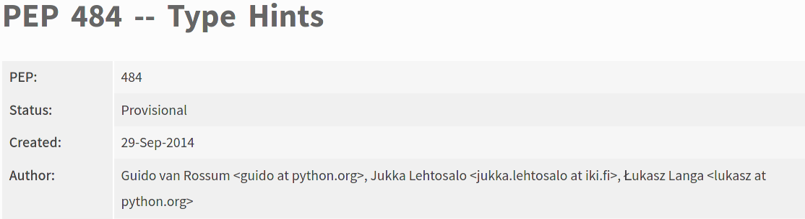

<h1 style="font-size: 3em">The Stable Interface Paradox</h1> <br/> <br/> <br/> <span style="font-size: 2.5em"> Paul Ganssle </span> <br/> <br/> <img src="images/pganssle-logos.svg" height="40px" alt="@pganssle"> <br/> <br/> <span style="font-size: 1em;"><em>This talk on Github: <a href="https://github.com/pganssle-talks/pyconf-hyderabad-2020-stable-interface">pganssle-talks/pyconf-hyderabad-2020-stable-interface</a></em> </span> <br/> <a rel="license" href="https://creativecommons.org/publicdomain/zero/1.0/"> <img src="external-images/logos/cc-zero.svg" height="45px"> </a> <br/> Notes: Hi everyone! Welcome to my talk! As the slide says, I'm Paul Ganssle. I'm a software engineer at Google and a contributor to many open source projects. Among other things, I maintain dateutil and setuptools, and I'm a core developer of the Python language, where much of my work has been focused on the `datetime` module (and now, the `zoneinfo` module). Today I'm going to talk about what I'm calling the Stable Interface Paradox, which is something that I think comes up a lot with big, popular projects like the ones I work on, but as you'll see, it's a problem that first manifests *before* you library, application or API endpoint gets popular. But before we get into all that, I thought I'd take a moment to appreciate the fact that I'm giving this talk. See, this is actually my first keynote! I was thrilled and flattered when the organizers asked me to speak at the conference, and I'm really excited to share this experience with you. Thing is, though, I'm still a little sad that this didn't involve actually visiting Hyderabad, so I'd start by recreating the experience at home.
<span style="font-size: 4em; font-weight: bold">✨ My Trip to Hyderabad ✨</span> Notes: I hope the organizers aren't starting to regret giving me an hour to pontificate on whatever I want at this point, but hopefully it'll be entertaining. -- <img src="images/plane-ride.webp" alt="An animated image of Paul in a simulated airplane. Paul has the window seat." style="height: 850px" id="splash" /> <div class="caption">Always bring a book on an 18 hour flight...</div> Notes: Obviously going to conferences isn't all fun and games and Hyderabad is 18 hours away. I wouldn't want to miss out on that experience! You can't see it here, but since I do have a 2-year-old in my house, I was able to accurately simulate the experience of a toddler on the plane screaming and kicking the back of your seat as well. -- <div class="caption fragment disappearing-fragment nospace-fragment fade-out" data-fragment-index="0"> The famous Hyderabad biryani </div> <div class="caption fragment disappearing-fragment nospace-fragment fade-in" data-fragment-index="0"> Delicious! Plus it only took 4 minutes to cook! </div> Notes: Once I landed in Hyderabad, obviously the first thing to do was to get a biryani, since everyone keeps telling me how great it is. Gotta say, I love that authentic biryani taste. Plus, (advance to second image), it's nice that they only take 4 minutes to cook! -- <img src="images/cricket_awake-scaled.jpg" alt="Paul prepares to watch a game of cricket!" style="height: 850px" class="fragment disappearing-fragment nospace-fragment fade-out" data-fragment-index="0" id="splash" /> <div class="caption fragment disappearing-fragment nospace-fragment fade-out" data-fragment-index="0"> Watching a cricket match </div> <img src="images/cricket_asleep-scaled.jpg" alt="Paul prepares to watch a game of cricket!" style="height: 850px" class="fragment disappearing-fragment nospace-fragment fade-in" id="splash" data-fragment-index="0" /> <div class="caption fragment disappearing-fragment nospace-fragment fade-in" id="splash" data-fragment-index="0"> (15 minutes later) </div> Notes: Now I'm not much of a sports guy, but I figured the best way to fit in with the locals would be to watch a cricket match. Unfortunately, those games are just too long for me. (Advance to second image) Couldn't quiiiite make it through a whole match. -- <div class="caption fragment disappearing-fragment nospace-fragment fade-out" data-fragment-index="0"> Trying my hand at making haleem. </div> <div class="caption fragment disappearing-fragment nospace-fragment fade-in" data-fragment-index="0"> Had to substitute some ingredients, though... </div> Notes: Of course, I've been told that Hyderabad is called the City of Nawabs and Kebabs, so you know food is going to feature prominently in any good conference, so I thought I'd make some famous Hyderabadi haleem. Of course, I didn't have exactly have all the right ingredients or like... a recipe, so I had to get a little creative, but based on a google image search, I'm pretty sure my version is pretty close to what I would have gotten in Hyderabad. Pretty good! OK, but in all seriousness, I appreciate you all bearing with me as I try and come to terms with the fact that I don't get to be there in person with y'all, and experience your culture and your city for real. Obviously, oatmeal and food coloring is not a real substitute for authentic haleem, and despite the 18-hour plane ride, I fully intend to get out there one day in person. But now that we've hopefully exorcised some of our frustrations with the current pandemic environment, I think we're ready to get on with the actual business of talking about, you know, programming and stuff.
<span style="font-size: 3.5em; font-weight: bold"> You will make mistakes when designing your interface. </span> Notes: -- <span style="font-size: 3.5em; font-weight: bold"> You'll probably realize what your mistakes were too late. </span> Notes:
<blockquote class="callout"> Given enough eyeballs, all bugs are shallow. <footer>Linus's Law (from The Cathedral and the Bazaar)</footer> </blockquote> Notes: Some of you are probably familiar with this saying popular in the open source community that given enough eyeballs, all bugs are shallow. From what I can tell, this is primarily used to mean that when you have a large community reviewing patches and source code, someone is bound to notice when something goes wrong and be able to fix it. I think there's another reasonable way to interpret this, though, and it's one that resonates deeply with my experience — when you have a large number of *users* deploying your application or library or whatever, they'll eventually hit all your bugs — even the most obscure ones. With another few orders of magnitude more users, they might even report those edge cases back to you in some useful format. -- <img src="images/setuptools-obscure-bug.png" alt="An comment on setuptools issue #2129 from jaraco. The text reads: This might be a contender for one of the most obscure bugs I've seen. Not only does it depend on the fact that your last name begins with 'egg' but it also depends on the fact that the egg-prefixed name appears in the last segment of the pathname, and it depends on the fact that you're on Windows, which provides compatibility with the decades-old 8.3 convention. I suspect there's another factor at play too that's causing the 8.3 filename to be used instead of the proper full filename."/> <br/> <div class="caption">From <a href="https://github.com/pypa/setuptools/issues/2129"><tt>setuptools</tt> issue #2129.</a></div> <br/> <ul> <li class="fragment">User's name is Adrian Eggenberger, so his username is <tt>a.eggenberger</tt></li> <li class="fragment">Default temporary folder is <tt>C:\Users\A9447~1.EGG</tt></li> <li class="fragment"><tt>pkg_resources</tt> considers a folder to be an "egg" if its name ends in <tt>.egg</tt></li> </ul> Notes: I was recently reminded of an excellent example of this that came up on the `setuptools` project this year. `setuptools` is over 15 years old at this point and is downloaded something like 2 million times *every day*, and back in May someone reported a very strange bug that as far as I know had been present for a long time, but no one had ever hit it, or at least hit it and then reported it. To summarize the issue, a user showed up and said that in an executable he was building, `pkg_resources` would fail on his workstation and *only* his workstation — it even worked on other user accounts on the same machine! It turns out that this is a *razor thin* edge case, which depended on: - The way he was invoking the executable - The fact that the user was on Windows - The fact that Windows was using some weird old compatibility interface to name its temporary folders. - The USER'S LAST NAME. You see, the user's name is Adrian Eggenberger and his username is `a.eggenberger` — I'm not sure which of these two related facts is the relevant one, but the consequence is that the default name of his temporary folder was this weird thing using the old 8.3 convention, where files and folders could only have 8 letters, followed by a dot, followed by a 3-letter extension. Because his last name is Eggenberger, that folder name ended with `.EGG`, which was, coincidentally, an extension that `pkg_resources` was using the detect whether it was currently in a Python "egg" package. Since his temporary folder is not actually an egg package, this caused `pkg_resources` to fail with an error. The user was able to work around this by changing the name of his temporary folder, and Jason fixed the bug with some better egg detection routines, but you can imagine there are probably similar bugs lurking around out there all over the place, just waiting to frustrate people to no end. What's unusual about this situation is that we heard about it. -- ```python >>> def f(): ... if 0: ... break # This is a syntax error! ... print("Hello") ... >>> f() Hello ``` <!-- .element: class="fragment" style="max-width: 60%; border: solid 1px"--> Notes: Another example of a fairly obscure bug is issue #1875 on CPython's bug tracker, first reported way back in 2008 and not actually fixed until Python 3.8 was released last year (2019). This was a fairly obscure issue, but it was independently reported several times over the years — in fact, I independently discovered it in 2019, and I didn't comment on the issue at the time, which goes to show you that most people who encounter bugs don't take the time to track them down to their origin, much less provide you with a report you could use to find and fix the cause in your code. This one was a fairly benign one, which is probably why it took so long to get fixed. The problem was that if you put certain types of syntax error in certain dead code branches of a program, they wouldn't get detected. So for example, it is a syntax error to have `break` outside of a loop, so this code *should* fail to compile, but prior to Python 3.8 it worked just fine. The reason for that has to do with the fact that it wasn't (maybe still isn't) possible to define this syntax error in the grammar due to the fact that the grammar had fairly strict limitations about how much it could know about the context of a given token. The way they fixed this is that the syntactic validity of a given Python program was checked twice — once when the program is parsed into bytecode, and then a second pass is made to ensure that no invalid bytecode operations were defined. This bug is caused because during the first step — when the bytecode is compiled — it also goes through an optimization step, and if you use `if 0` or `while False` or any other sort of conditional with a literal false value, the optimizer knows that it's dead code and simply removes it — it emits no byte code, and as such it misses that second check for syntactic validity. The thing about this kind of bug, though, is that really the only people who noticed it were people trying to implement their own versions of Python, or other rather abstruse things that depend on Python having such a large number of people that it would make sense for two people to implement the same protocol, or to build the other kinds of things — parsers, linters, code formatters, etc — where you'd actually notice this kind of thing. -- ```python >>> from datetime import datetime, timedelta, timezone >>> class DatetimeSubclass(datetime): pass ... >>> DatetimeSubclass.fromtimestamp(1607167800.0) DatetimeSubclass(2020, 12, 5, 6, 30) >>> DatetimeSubclass.fromtimestamp(1607167800.0, timezone.utc) datetime.datetime(2020, 12, 5, 11, 30, tzinfo=datetime.timezone.utc) ``` <!-- .element: class="fragment" style="max-width: 60%; border: solid 1px" --> Notes: One last example from CPython is this bug. The problem here was that if you made a subclass of the `datetime.datetime` class and called `fromtimestamp()` it would return an instance of your subclass, as you'd expect, but if you passed it any sort of time zone object, like `datetime.timezone.utc`, it would return a plain `datetime.datetime` object. This was happening because `.fromtimestamp()` uses datetime arithmetic if it needs to calculate UTC offsets, and at the time, `datetime` arithmetic *always* returned a `datetime.datetime`, even in subclasses. You had to explicitly override the arithmetic dunder methods to get them to return your subclass, and there were a bunch of places where it was hard to predict what you were getting, so you ended up having to implement all the methods of `datetime` just to get them to always return your subclass. This is another one of those things that only happens when you get enough users, because it's only once the audience gets large enough that you have niche users for whom the standard library `datetime` class doesn't quite work, or when the audience for Python programs gets big enough that it would make sense to provide a third-party library that inherits from `datetime`, but in this case there are other implications, because it turns out that at least some of these bugs were actually *deliberate design decisions* — in the standard library at least, they don't assume that subclasses must implement a constructor taking the same arguments as the base class, and the solution to this is that any methods that need to return an instance of the class itself will always return an instance of the base class. But what I've found, at least in the case of `datetime`, is that people find it *really annoying* to re-implement the base class's entire interface just to make sure their subclass's type is persistent, and they don't actually seem to care when you call the class constructor as if it's the base class. This is just one particularly unusual manifestation of a wider problem that people were constantly reporting (or working around), but in all the time we've had interfaces that return instances of the subclass, I've only ever seen one class broken by it, and that was fairly easy to work around. The people who originally designed Python and this system in general are extremely careful thinkers, and have exquisite design sensibilities. They got an enormous amount right, but they didn't predict that this would be a usability concern from their users until we got feedback from long tail users. That is a very humbling lesson. -- <blockquote class="callout"> <span class="fragment disappearing-fragment nospace-fragment fade-out" data-fragment-index="0">No battle plan survives contact with the enemy.</span> <span class="fragment nospace-fragment fade-in" data-fragment-index="0">[N]o plan of operations extends with any certainty beyond the first contact with the main hostile force.</span> <footer>Helmuth von Moltke the Elder</footer> </blockquote> Notes: That brings me to my next point, which is that we sort of know this. It has often been said that No battle plan survives contact with the enemy, and the same goes for the code we release to our users. Interestingly, it also apparently goes for pithy sayings, because although I've attributed this to Helmuth von Moltke, this is *actually* a paraphrasing. The original quote is in German, but from what I can tell, a much closer translation is, "No plan of operations extends with any certainty beyond the first contact with the main hostile force." Evidently as soon as "the enemy" got a hold of that particular phrasing, they chopped it up and used it for parts. And the same thing will happen to the programs you write when they hit your users. It's even spawned a whole genre of memes! -- Notes: The general idea behind these memes is that no matter how well you design your program, your users will do horrible things to it. They'll drill holes in your product and use it as a bong. They'll use it in the least efficient way possible, like these cats. Or, like this guy, they'll seem to do everything *except* use your product as intended. I think sometimes the undercurrent is, "look how stupid our users are", but I prefer to see them as saying, "We should be humble about our ability to understand and predict our users' needs, because they'll often surprise us. -- # Desire paths Notes: We can take a lesson from our users "using it wrong". I'm sure many of you have seen something like this before — it's called a desire path or sometimes a desire line. Someone builds this perfectly good sidewalk, and everyone sees that it's slightly longer than cutting across the grass, so they cut across the grass and all of a sudden there's a new, more convenient path dug into the grass. This isn't people being stupid and not realizing that you're supposed to walk on the concrete. It's people being smart and efficient and showing you where you should have put the concrete in the first place. Ideally, you would keep an eye out for indications that a desire path is developing and try and lean into it — or try and add some more guard rails if it's really important that they stay within the lines! -- # The Curse of Knowledge Notes: Another theme I see in these memes is that no one reads the documentation. You're constantly answering questions that anyone could easily find in the documentation, or finding that people are failing to do something that's so basic it's in your repo's `README`. Some of this is, of course, down to the fact that people don't read documentation, but some of it is what's called the Curse of Knowledge. This is a cognitive bias in which experts find it hard to predict what non-experts will find challenging, because they don't know (or remember) what it's like to not be an expert. You've probably experienced some form of this in a limited but visceral way if you've ever played charades. To you, your flailing and pointing and such *obviously* represents *Fast and the Furious: Tokyo Drift*, but that's because you've already got the necessary context, whereas the people on the couch think you're running around trying to get an incontinent cat to its litter box. This is something that in a sense *only* new users are qualified to tell you about — they don't have the context or the expertise to understand whatever it is you are trying to explain to them, but if you pay attention to the ways that they fail, you'll be better able to design both your documentation and your product in a way that's truly intuitive, not just intuitive for you, the world's expert in your product. -- # Unfamiliar environments <center> <video autoplay="true" loop="true" muted="true" width="720"> <source src="external-images/fair-use/rtl-broken-whatsapp.mp4" type="video/mp4"> Your browser does not support the video tag. </video> </center> From <a href="https://twitter.com/_saljam/status/1255197629123878914?s=20">@_saljam's April 2020 Twitter Thread</a> on RTL bugs. Notes: One last benefit I'd like to highlight about having a large user base is that as the size of your user base gets bigger, you start seeing problems that you may never have thought to test for, because they're not something you would experience in your daily life — but they are the reality for many people. For example, apparently when your WhatsApp interface is set to a language that is written right-to-left, playing a voice message makes the progress bar move in *both directions*. Evidently one of these indicators is implemented in something sensitive to RTL markers and the other isn't. Maybe you've thought to test for this, and maybe you've thought to test that your thing works with a screen reader, and that it's colorblind-friendly, but the world is a wide and varied place, and likely you'll find that your users are telling you about some interesting way of being human that you've overlooked.
<blockquote class="callout"> With a sufficient number of users of an API, it does not matter what you promise in the contract: all observable behaviors of your system will be depended on by somebody. <footer><a href="https://www.hyrumslaw.com">Hyrum's Law</a></footer> </blockquote> Notes: So far, I'd say that we've only covered some of the benefits of a large and thriving ecosystem — your code gets battle-tested and incrementally improved as your users do the testing for you and help guide your design decisions. Now it's time to get into the less rosy side of a large user base. This is Hyrum's Law, which is something I bring up very frequently in design discussions (and as an aside I just recently learned it was formulated by one of my colleagues at Google!). Hyrum's law states that when the number of users of your API gets large enough, someone will depend on every observable behavior of your system. What this means, basically, is that, frequently, your bugs end up as "load-bearing bugs", and people start depending on behaviors that, were you designing them from scratch, would be considered bugs. For example, Joel Spolsky has a blog post called ["My First BillG review"](https://www.joelonsoftware.com/2006/06/16/my-first-billg-review/) where he explains that there's a peculiarity in the way Excel and Visual Basic handle datetime offsets — Excel uses January 1, 1900 as its "epoch" and Visual Basic uses December 31st, 1899, but for modern dates, the "offset from epoch" is always the same. It turns out that the reason for this is that Excel has a bug where it considers 1900 a leap year, but that this bug was not only not fixed but also *intentionally introduced* so that Excel could be compatible with Lotus 123 spreadsheets, which also had the same bug. Presumably the odd choice of epoch for Visual Basic was also made so that Visual Basic could be both correct for pre-1900 dates and also compatible with Excel for modern dates. This is the flip side of having a large number of users — backwards compatibility concerns tend to dramatically curtail the available options you have for changing your interface. -- Notes: For example, going back to one of the obscure bugs we saw earlier. If you recall, we had a bug in CPython where optimizing out certain dead code branches would fail to catch certain syntax errors. Originally, this was fixed by changing the optimization so that the compiler would emit byte code for all the dead code, but it would have an unconditional jump that always skips over it — that way the byte code is still available for inspection, but you never execute it. It turns out, even this minor change was noticed — and not because of whatever minor performance degradation you might see. -- <blockquote class="callout" style="font-size: 1.25em"> The real-word implications from my world are this: if your code has "if 0:" clauses in it, and you measure its coverage, then because the lines have not been optimized away, coverage.py will think the lines are a possible execution path, and will be considered a miss because they are not executed. This will reduce your coverage percentage. <footer>Ned Batchelder, <a href="https://bugs.python.org/issue37500#msg347362">bpo-37500</a></footer> </blockquote> <br/> ```python def f() -> int: if 0: print("This code is unreachable!") if not __debug__: print("Running in optimized mode!") return 3 ``` <div class="caption">This code would have 100% coverage prior to the change, but less than 100% coverage afterwards.</div> Notes: You see, it turns out that `coverage.py` uses the emitted byte code to determine what lines are and are not covered by your tests. What this means is that if there's no byte code corresponding to a given line, `coverage.py` will consider that line "covered" and it won't show up as a miss. When the change went in in Python 3.8, people saw that their code coverage metrics went down and started complaining because their dead code was showing up as uncovered! Apparently some people use `if 0` or even worse, `__debug__`, which resolves to `True` or `False` at compile time, and apparently they don't want their code coverage numbers to change or to have to add a `# pragma: nocover` to their dead code statements. So people were relying on this obscure bug based on an implementation detail of the way CPython chooses to optimize its code at compilation time. As Hyrum's law states, every observable feature will be depended on by *somebody*. -- # Packaging in Python: A Tale of Woe <br/> In Python 2.0, `distutils` was added to the standard library. This allowed distro maintainers: <br/> <br/> 1. A standard way of converting Python projects into Linux distro packages 2. System administrators a standard way of installing them directly onto target systems <br/> <br/> Package authors would write a `setup.py` that runs `distutils.core.setup()`, and end users would execute any number of commands via `setup.py <command>` (e.g. `setup.py install` and `setup.py test`). Notes: To see the kinds of problems this can cause, we should now take a journey back in time 20 years, to the beginning of the notion of creating Python packages. Prior to Python 2.0, the land of Python packaging was incredibly bleak, to put it mildly. There was no PyPI, no `pip install`, no `setuptools`, and prior to Python 2.0 there wasn't even a `distutils`. This is one reason that Python's "batteries included" philosophy was seen as such a strength — it was similarly painful to depend on third-party code in most if not all other languages, so the fact that basically all the useful modules tended to be incorporated into CPython core was incredibly convenient. Things started to change when `distutils` was introduced. `distutils` was intended to be a standard way of converting Python projects into Linux distro packages (and later, Windows packages as well), and for sysadmins to install their projects. Now, instead of having completely ad-hoc installation instructions that were different for every package, package authors could just write a `setup.py` file that runs `distutils.core.setup()` and a number of commands — including `build`, `install` and `test` — would be provided for users. -- <img src="images/pypi-2003.png" alt="The PyPI website as of 2003." id="splash" /> Notes: To solve the problem of distributing these packages, in 2002, Richard Jones (in collaboration with several others) created PyPI, as a more formalized version of a previous package index called the Vaults of Parnassus. The idea was that `distutils` would generate metadata in a specified format and PyPI would host the metadata. No packages were actually hosted on PyPI, the metadata just included a link to a place you could go and download the package. There was still no equivalent of `pip install` — you had to download the package, then read the metadata to figure out what other packages it depends on, then go back to PyPI and download those, then install them all manually in the right order. -- <blockquote class="callout" style="font-size: 1.5em"> The sheer amount of features that Setuptools brings to the table must be stressed: namespace packages, optional dependencies, automatic manifest building by inspecting version control systems, web scraping to find packages in unusual places, recognition of complex version numbering schemes, and so on, and so on. Some of these features perhaps seem esoteric to many, but complex projects use many of them. <footer><a href="https://blog.startifact.com/posts/older/a-history-of-python-packaging.html">Martin Faasen, A History of Python Packaging (2009)</a></footer> </blockquote> Notes: So that sounds like a huge pain, and in 2004 Phillip Eby released a solution to this as part of `setuptools`. `setuptools` was basically extensions to `distutils` that brought in a huge number of features for building, installing and managing your packages. This included the utility `easy_install`, which worked a lot like `pip` — it would go to PyPI, download the package you want, then figure out what all of its dependencies are and download those, etc. This was also built directly into the `setup.py install` command. As you can imagine, this was a very popular extension, to the point where people started assuming it was installed, sometimes even without declaring any sort of dependency on it. -- ```bash $ pip install attrs Collecting attrs Downloading attrs-20.3.0.tar.gz (164 kB) |████████████████████████████████| 164 kB 6.1 MB/s Installing build dependencies ... done Getting requirements to build wheel ... done Preparing wheel metadata ... done Building wheels for collected packages: attrs Building wheel for attrs (PEP 517) ... done Created wheel for attrs: filename=attrs-20.3.0-py2.py3-none-any.whl size=49337 sha256=a6b44de70bcc7834e967dbea0b96c5f1ad03d438227c1e78f5dcbfbeb338607c Stored in directory: ~/.cache/pip/wheels/a4/3a/c7/ae1b7ae92f377604b64cab81594eb43ea843376139f34cc8a5 Successfully built attrs Installing collected packages: attrs Successfully installed attrs-20.3.0 ``` <br/> <div class="caption"><tt>pip</tt> (which stands for <em><tt>pip</tt> installs packages</em>) was introduced by Ian Bicking in 2008.</div> Notes: Fast forward to 2008 and Ian Bicking introduces `pip`, which works a lot like `easy_install`, but is a lot more user-friendly, and I believe it did the dependency resolution at a slightly earlier stage in the process. Don't quote me on this, but I think it was around this time that PyPI started hosting packages directly, rather than simply acting as an index linking to files hosted elsewhere. -- <img src="external-images/gathering-storm.jpg" alt="Dark clouds gather over New York city" id="splash" /> Notes: At this point, the Python packaging story is starting to take shape into something resembling the current state of things — the packaging landscape was looking better than ever with `pip`, PyPI, `setuptools`, `easy_install` and `distutils`, and a number of other innovations I haven't mentioned here, but there were dark clouds gathering on the horizon. The problem is that most things here were being done in an ad hoc fashion. People were building on top of one another's work, but there was no clearly specified interface. The interface you were targeting was "works with what people are already doing", which leaves less and less room for innovation when you can't meaningfully compete without, for example, being bug-for-bug compatible with `setuptools`. -- # Packaging Problems - Installing a package requires executing `setup.py` - Arbitrary code execution... often as root! - Compilation is time consuming, but no standards exist for distributing or installing binaries. - No way to specify dependencies for `setup.py` <sup>†</sup> <br/><br/> - `distutils` - Largely unmaintained because of the long release cadences and the fact that changes would break arbitrary packages. - A sprawling module with a bunch of stuff unrelated to build code. <br/><br/> - `setuptools` - Monkey-patches `distutils` on import - Also integrated with `pkg_resources` and `easy_install` <br/><br/> - `pip`: - Always injects `import setuptools` as part of installation and build - Executes `setup.py` commands <br/><br/> - `distribute`: Imported as `import setuptools` <br/><br/> <span style="font-size: 0.25em"><sup>†</sup>Sort of</span> -- <div class="fragment fade-out nospace-fragment disappearing-fragment" data-fragment-index="0"> <br/> </div> <div class="fragment fade-in disappearing-fragment nospace-fragment" data-fragment-index="0"> <img src="images/pep632-pep.png" alt="PEP 632 -- Deprecate distutils module" /> </div> - [**PEP 440**](https://www.python.org/dev/peps/pep-0440) - *Version Identification and Dependency Specification* - [**PEP 453**](https://www.python.org/dev/peps/pep-0453) - *Explicit bootstrapping of pip in Python installations* - [**PEP 503**](https://www.python.org/dev/peps/pep-0503) - *Simple Repository API* - [**PEP 508**](https://www.python.org/dev/peps/pep-0508) - *Dependency Specification for Python Software Packages* - [**PEP 513**](https://www.python.org/dev/peps/pep-0513) - *A Platform Tag for Portable Linux Built Distributions* Notes: And now, because we have thousands or hundreds of thousands of packages depending on unspecified or under-specified characteristics of a complex inter-woven ecosystem of packages, we have a huge tangled mess to sort out and an extremely constrained design space. At the end of the day, we will need to break many assumptions that people have spent over a decade relying on, but the end goal is to start building inter-operability standards for packaging in Python that are better defined and allow the future of packaging in Python to evolve. The biggest players here are PEP 518 and PEP 517, which allow you to declare that your package is built with a backend other than `setuptools`, and also define the interface between backends like `setuptools` and front-ends like `pip`. This has allowed other players like `flit` and `poetry` to enter the scene, but because of the crushing weight of backwards compatibility it's incredibly slow-going. It's been 5 years since PEP 517 was accepted, and only recently was its status as "provisional" changed to "final" — and there were many changes that could only be made *after* we got feedback from users that something about PEP 517 wasn't suitable for their use case. Usually these complaints did not take the form of a kind note written in calligraphy on embroidered stationary. These PEPs are very carefully designed with maximum backwards compatibility in mind, and the changes required by end users are fairly minor, but still it's often disheartening to see the sort of anger it evokes in people that the PyPA would dare change something that already works (or at least seems to in most cases). PyPA packages are partially so valuable because of the huge ecosystem they exist in, and the large number of users we have to give feedback. That huge number of users is also likely their greatest liability, because it builds an enormous amount of inertia into the system that makes it very difficult to make any changes without creating a lot of extra work for people or creating a lot of confusion as all of a sudden best practices in packaging keep changing.
# The Stable Interface Paradox <br/> <blockquote class="callout"> The smaller the user base, the harder it is to design an appropriate interface, but the larger the user base, the harder it is to change your interface. </blockquote> Notes: Which brings us to the nominal subject of the talk, which I'm calling the Stable Interface Paradox, which is my observation that the smaller your user base is, the harder it is to design the right interface, but the larger your user base, the harder it is to change your interface. This is to say that you can't know what the final product should look like before you get it to your customers, but once you've got it in front of your customers, you can't change it! -- <img src="images/stable-interface-graph.png" alt="A graph indicating that ability to change an interface decays as number of users increases, while user feedback increases." /> Notes: And of course, what kind of keynote speaker would I be without producing at least one graph with what I'm calling "thought leader axes" — also known as "CEO axes" or "Apple plots" — where the y axis is unlabeled and there are no numbers on the graph anywhere. But still I do think it's useful to see the principle illustrated — even if the shapes of these curves aren't quite right, I think the general trend is right. You understanding of your problem domain increases as you have more and more users willing to give you feedback about how your product is used in a diverse array of circumstances. However, your ability to react to that feedback is *inversely correlated* with the number of users. It is not clear to me that there is any optimal spot on this curve where you want to be most responsive.
# Second-mover advantage and Network Effects <img src="external-images/hermit-crabs.jpg" alt="Several Hermit crabs on a beach on Howland Island NWR" id="splash" />
<span style="font-size: 5em; font-weight: bold">What should we do?</span> -- # UX Research <div class="caption"><tt>pip</tt> is undertaking <a href="https://pip.pypa.io/en/stable/ux_research_design/">UX Research</a> to anticipate user needs.</div> -- # Pre-releases <img src="external-images/python-release-cadence.png" alt="A chart from PEP 602 illustrating Python's annual release cadence, including pre-alpha, alpha and beta phases." style="max-height: 750px" /> <div class="caption">CPython makes extensive use of pre-releases.</div> -- # Provisional interfaces <div style="display: flex; flex-direction: column;"> <img src="images/asyncio-provisional.png" alt="The asyncio module was considered provisional in Python 3.5" />  <div class="caption">Marking an interface as provisional is a variation on pre-releases.</div> </div> -- # Deprecations <img src="images/easy_install_deprecated.png" alt="A warning on the `easy_install` documentation indicating it is deprecated" style="width: 1000px" /> <br/> <br/> <img src="images/setup-py-test-deprecated.png" alt="A warning on the documentation for setup.py test indicating that it is deprecated" style="width: 1000px" /> <br/> ``` $ python2.7 -m pip list DEPRECATION: Python 2.7 reached the end of its life on January 1st, 2020. Please upgrade your Python as Python 2.7 is no longer maintained. pip 21.0 will drop support for Python 2.7 in January 2021. More details about Python 2 support in pip, can be found at https://pip.pypa.io/en/latest/development/release-process/#python-2-support Package Version ---------- ------------ pip 20.1.1 setuptools 39.0.1 ``` -- # Deprecations <img src="images/hn-comment-packaging.png" alt="HN Comment, text reads: Python Packaging is not hard anymore \n Would you tell us which is the 'right way to do it' nowadays? Possibly, in a maintainable, kind-of-officially supported way that doesn't change or disappear in a few months? \n Please note: I use Python professionally since 2005, I've been involved in a lot of Python packaging for production apps (including giving some talks on the bad state of Python packaging at Europython around 2010) and I had followed closely the then-failed distutils2 effort. And I still don't know what's the 'right and easy way to do it'." /> <br/> <br/> -- <div style="font-size: 5em; font-weight: bold" class="fragment fade-out disappearing-fragment nospace-fragment" data-fragment-index="0" > What should we do? </div> <img src="external-images/bunker-entrance-modified.jpg" alt="The entrance to a bunker in the woods" id="splash" class="fragment disappearing-fragment nospace-fragment" data-fragment-index="0" /> <div class="caption fragment disappearing-fragment nospace-fragment" data-fragment-index="0" > A secret bunker in Sweden where we can hide out from the consequences of our hubris.</div> </div>
<img src="external-images/vermeer-woman-with-a-balance-modified.jpg" alt="A cropped version of Johannes Vermeer's Woman with a Balance; a painting of a seemingly pregnant woman holding a small balance scale. (Scholarly opinion is that she is not supposed to be pregnant for various reasons, but to modern eyes she looks heavily pregnant)." id="splash" /> -- # Churn budget - How important is the change? + <!-- .element: class="fragment" --> How many people will it affect? + <!-- .element: class="fragment" --> How painful will it be for affected users? + <!-- .element: class="fragment" --> How much goodwill have you spent recently?
<img src="external-images/monkey-00.jpg" id="splash" alt="A monkey staring off into the distance" class="fragment nospace-fragment disappearing-fragment fade-out" data-fragment-index="0" /> <img src="external-images/monkey-01.jpg" id="splash" alt="A monkey looking playful" class="fragment nospace-fragment disappearing-fragment fade-in" data-fragment-index="0" />